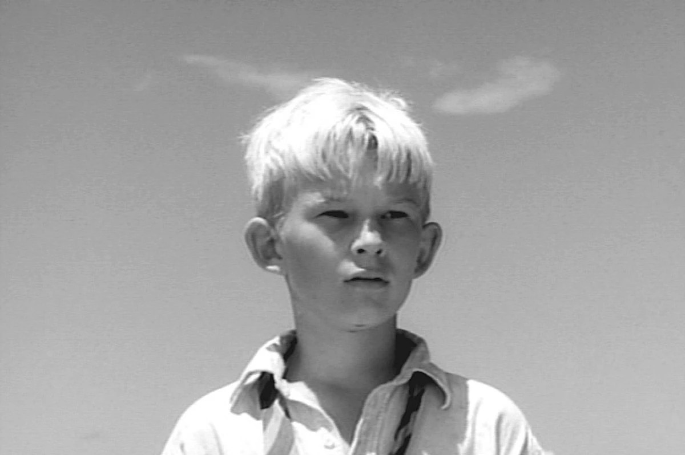

This character first becomes significant when he is picked to explore the island with Ralph and Jack towards the beginning of the book, though the biggest significance this character has in the story is during the second part of the book when he tries to bring a pig’s head to the beast as an offering. While he is alone in the forest with the pig’s head, he starts hallucinating and believes that the pig’s head is speaking to him. The pig’s head is known in the book as the Lord of the Flies, and it represents evil. The Lord of the Flies tells him that he cannot run from the Beast or kill the Beast because the Beast lives inside him and inside the other boys. He learns that the Beast is not something that lives in the forest, but it is the evil living inside the boys. Ironically, when he tries to go back to the other boys they kill him. This shows how the boys on the island are losing their morals and letting the beast inside of them come out.